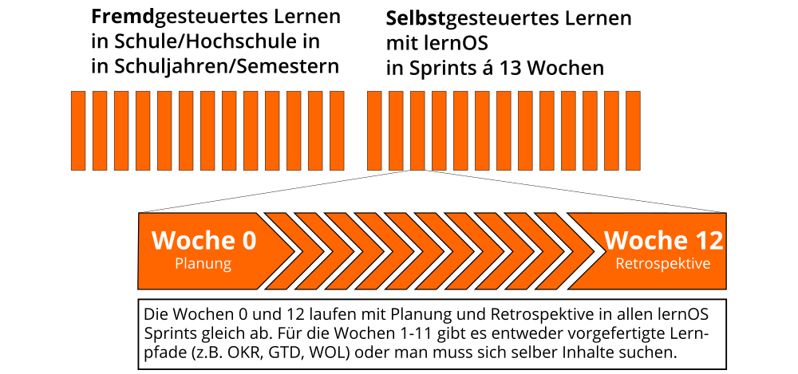
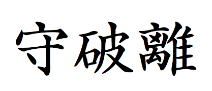

lernOS für Dich
Die Kunst des selbstgesteuerten, lebenslangen Lernens
von Simon Dückert und der lernOS Community
lernOS für Dich ...
... ist eine Selbstmanagement-Methode
für lebenslanges Lernen.
Das 21. Jahrhundert
 |
 |
| Globalisierung, Digitalisierung und schneller Fortschritt führen zu ständiger Veränderung (VUCA). | Wir müssen den Wandel verstehen und unser Lernen vielseitig, vernetzt und flexibel gestalten (VUCA). |
Ein Leben lang Lernen
- Schüler - Grundlagen schaffen
- Ausbildung - für die Arbeit vorbereiten
- Arbeitszeit - sich kontinuierlich weiterbilden
- Ruhestand - Wissen für die Nachfolger bewahren
A Fool with a Tool ...
 |
 |
21st Century Skills

Lernen in Sprints
lernOS Canvas

lernOS Leitfäden
 |
|
Let's DO lernOS
| Kata (Übung) |
|---|
| 10 Fakten über mich |
| Was will ich lernen? |
| Mein Lernziel |
| Meine Netzwerkliste |
| Next Actions |
10 Fakten über mich
Persönliches hilft beim Vernetzen
- Erstelle eine Liste mit zehn Fakten über dich, z.B. Lebenserfahrungen, Vorlieben, Abneigungen, Geburtsort, Familie, Kinder, Schulen, Universitäten, Arbeitgeber, Urlaub, Hobbys, Lustiges
- Stellt dich vor und findet erste Gemeinsamkeiten
Was will ich lernen?
 |
|
Mein Lernziel
Welches Lernziel willst du erreichen?
- Schreibe ein Lernziel für den nächsten Sprint auf ein Post-It auf.
- Klebe das Post-It in das Feld "Ziele" im Canvas.
- Ergänze 3-5 konkrete Ergebnisse zu deinem Ziel.
- Stelle Ziele und Ergebnisse vor.
Meine Netzwerkliste
Wer kann mit Erfahrung bei deinen Zielen helfen?
- Erstelle eine Liste von 10 Personen, die dir bei deinen Zielen helfen können.
- Auf der Liste können Einzelpersonen, Gruppen oder Platzhalter für Unbekannte stehen.
- Stelle deine Liste vor und helft euch beim Vervollständigen.
Nächste Aktionen
Die längste Reise beginnt mit den nächsten Schritten
- Erstelle eine Liste von 5 konkreten nächsten Aktionen zur Erreichung deines Ziels.
- Stelle deine Next-Actions-Liste vor.
- Diskutiert unterschiedliche Herangehensweisen zur Zielerreichung.
Lernen mit Shu Ha Ri
Shu |
Ha |
Ri |
| Lerne die Grundlagen | Finde deinen Weg | Trage mit deinem Wissen bei |
lernOS Formate
- Einzelkämpfer: du lernst im Selbststudium mit deiner eigenen Geschwindigkeit.
- Lerntandem: ihr durchlauft den Lernpfad zu zweit und helft euch gegenseitig.
- Lerngruppe (Circle): 4-5 Lernende tauschen sich über 13 Wochen zum Lernfortschritt regelmäßig aus (empfohlen).
Stop talking, start doing!
- Folge @lern_os auf Twitter
- Melde dich zum lernOS Newsletter KCLO an
- Werde Teil der lernOS Community
- Suche/biete Circles im lernOS CircleFinder